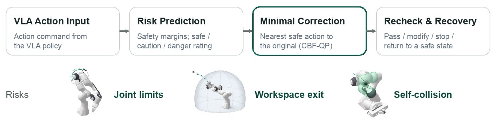
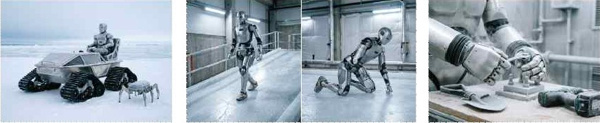
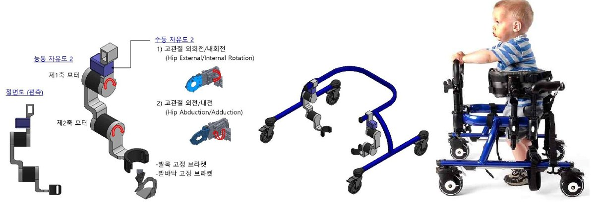
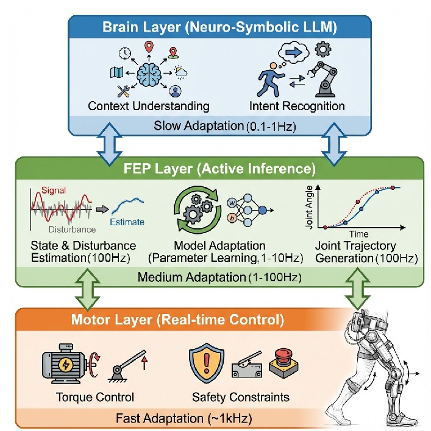
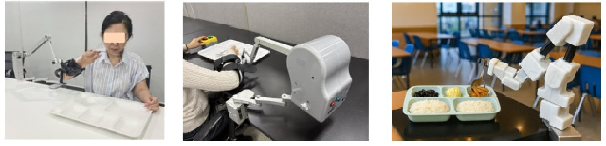
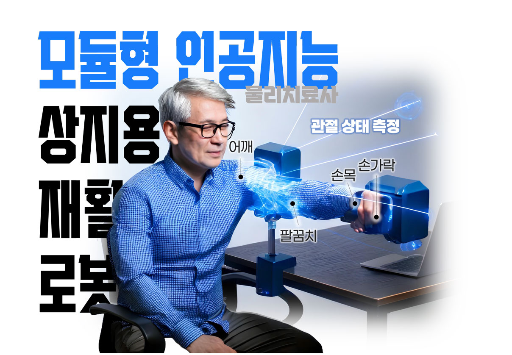
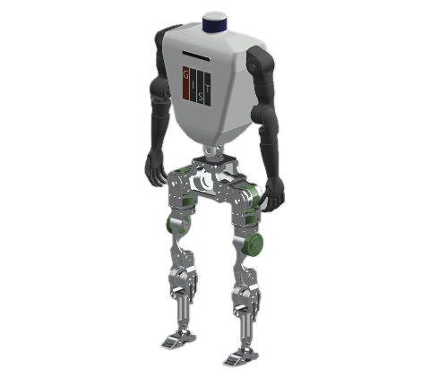

Funding Agent: Ministry of Science and ICT of South Korea, Honam Regional Science and Technology Innovation Program (과학기술정보통신부 4극3특 과학기술혁신지원사업, 호남권), (Oct 2026 ~ Mar 2027, preliminary phase; may extend to Dec 2030)

Factories adopt new robots and new processes often, and each change usually means collecting new data, retraining, and reprogramming robot by robot. This project, led by GIST with KITECH, KETI, and manufacturers in the Honam region (Gwangju Global Motors, Sebang Lithium Battery, and HD Hyundai Samho), develops a cross-embodiment robot foundation model. The model learns a shared representation of tasks from vision, language, contact, force, and robot state, so that task skills can be transferred across different types of robots. A new robot or process can then be brought online quickly from its robot description (URDF), a digital twin of the workcell, and about ten demonstrations. The technology will be validated in mobility, battery, and shipbuilding manufacturing, on objects ranging from small 500 g parts to 100 kg workpieces. The current preliminary phase is a proof of concept, and it may be followed by a full project through Dec 2030.
Our group focuses on the safe implementation of vision-language-action (VLA) models. We develop a safety gate that does not depend on any particular policy or robot. It treats the VLA policy as a black box and checks each chunk of actions just before execution against the robot's physical limits: joint position and velocity limits, singularities, workspace boundaries, and self-collision. It also checks human–robot collaboration safety, such as slowing down and stopping based on the distance to people. Only the risky segments are minimally corrected to the nearest safe action using control barrier functions and quadratic programming (CBF-QP), so the robot can pass, modify, stop, or return to a safe state while keeping the task intent. The safety check relies only on the robot's kinematic model, with no learned components. A new robot can be added simply by registering its URDF and limit values, and the gate is validated in simulation, in the digital twin, and on real robots.
Funding Agent: Ministry of Science and ICT of South Korea, InnoCORE Program (과학기술정보통신부 과기원 InnoCORE연구단 지원사업), (May 2026 ~ Dec 2030)

This large research center, led by GIST, develops Physical AI robot systems that can carry out resource-exploration missions in polar regions without a reliable connection, under three constraints at once: temperatures down to −50°C, communication blackouts, and unreliable GPS. GIST works with six other universities, eight government research institutes such as the Korea Polar Research Institute (KOPRI), eight companies, and international collaborators. Four research groups cover robots and mobility, batteries and thermal management, sensors and system health monitoring, and networking and system integration, all combined into one integrated system. The center also trains about 25 InnoCORE postdoctoral fellows each year.
Our group focuses on developing and controlling the humanoid robots at the heart of the system. This includes joint modules that work at −40°C and learning-based walking that adapts to uncertain friction on ice and on deformable snow, aiming for stable walking on a 10° icy slope. We also develop fall-recovery policies that prevent falls, soften impact, and stand back up on low-friction ice, and manipulation with tools such as a shovel, drill, and wrench in extreme cold. Active Inference, based on the Free Energy Principle, lets the robots account for uncertainty in their control, and the humanoid can dock with a polar rover to travel long distances. The technology is tested step by step: first in GIST's cold chamber, then at the KRISO ice tank, Daegwallyeong outdoor sites, and KOPRI facilities, and finally in 24–48-hour full-system field tests in places such as Iceland and Hokkaido, Japan.
Funding Agent: National Rehabilitation Center, Ministry of Health and Welfare of South Korea (보건복지부 국립재활원), (May 2026 ~ Nov 2028)

This project (May 2026 – Nov 2028) develops an end-effector-based gait rehabilitation robot for children aged 2 to 6 with gait disorders caused by conditions such as cerebral palsy and brain injury. Early childhood is when neuroplasticity is greatest, yet few rehabilitation robots are designed for children this young, and current walkers mostly provide passive body-weight support. The robot attaches to a pediatric walker frame and guides each foot with a two-axis active end-effector, plus passive hip rotation and abduction joints. Its frame adjusts as the child grows, and it is quick to put on, so the child's pelvis and trunk can move naturally.
Our group develops the intelligent control: admittance-based compliant control with gravity and friction compensation, estimation of the child's walking intention from interaction forces, and adaptive Assist-as-Needed (AAN) control that provides help only when it is needed and blends passive and active training modes. We also develop data-driven personalization that adjusts the amount of assistance from session to session based on repeated training data. Working with the lead company, NT Robot, the project includes KC certification, usability studies, accredited medical-device safety testing, and clinical evaluation with experts and children with disabilities.
Funding Agent: National Research Foundation of Korea, Ministry of Science and ICT (과학기술정보통신부 한국연구재단, 핵심연구 유형B), (Mar 2026 ~ Feb 2031)

Most wearable gait-assistance robots generate assistive torque from the average gait pattern of healthy people. This "one-size-fits-all" approach fits stroke survivors poorly, because their gait varies widely in asymmetry, spasticity, and compensatory strategies. This project shifts from generalized control to personalized adaptive control based on the Free Energy Principle (FEP), a theory of how the brain works by minimizing prediction error. We build a hip–knee exoskeleton with a three-layer control architecture. A lightweight on-board language model (Brain layer) infers context and user intent over seconds to minutes. An Active Inference layer estimates the user's joint torque and gait state without torque sensors and slowly adapts its model of the user. A real-time motor layer handles torque control and safety at about 1 kHz.
Personalization starts from a general controller trained on a large set of healthy-gait data and is then fine-tuned for each patient with minimal calibration. The robot adapts slowly, so that the user and the robot can learn to work together (co-adaptation) without the user being confused by sudden changes. To make rehabilitation progress interpretable, we add an entropy-minimization step to muscle synergy analysis that always converges to the same solution regardless of initialization. The resulting synergy measure serves both as a basis for control and as a clinical indicator of motor recovery. The framework will be validated in a 12-week randomized controlled trial with 30 stroke survivors.
Funding Agent: Korea Health Industry Development Institute, Ministry of Health and Welfare of South Korea (보건복지부 한국보건산업진흥원), (Jan 2026 ~ Dec 2027)

This project develops a portable, modular meal-assistance robot that helps people with upper-limb disabilities and older adults with limited mobility eat on their own, at home or in care facilities. Fully automatic feeding robots are expensive and serve only a narrow group of users, and passive arm supports give too little help for people with severe weakness. By combining interchangeable modules, the same platform can be set up as a manual arm support, a powered arm-assist robot, or a fully automatic feeding robot, depending on each user's level of impairment. The robot uses Assist-as-Needed control, which detects the user's intention and assists only as much as needed, and it goes through KC certification and usability evaluation with real users.
Our group joined the project for its final two years. We develop meal-history management and nutrition analysis that use the robot's position and camera images to identify the foods eaten and track how much of each is eaten, and a conversational AI chatbot with a voice interface for spoken guidance and emotional engagement during meals. We also extend the robot's control to other daily-living tasks and improve its control performance based on usability feedback, working with the lead company, NT Robot.
Funding Agent: National Rehabilitation Center, Ministry of Health and Welfare of South Korea (보건복지부 국립재활원), (May 2025 ~ Nov 2027)

This project aims to develop a modular upper limb rehabilitation robot for patients with central nervous system disorders, such as those with brain lesions. The project seeks to create a single device capable of rehabilitating various joints through interchangeable modules, supported by AI-driven personalized training programs and a large language model (LLM)-based chatbot for effective user engagement. The research will progress through conceptual design, development of joint-specific modules, creation of adaptive control algorithms, and integration of user-friendly interfaces, culminating in usability evaluations and commercialization planning. The ultimate goal is to address the limitations of current rehabilitation devices—such as high cost, limited mobility, and complex operation—by providing a versatile, intelligent, and accessible solution that enhances upper limb function and rehabilitation outcomes for patients.
Funding Agent: GIST, (Jan 2025 ~ Dec 2026)

This project focuses on developing AI-based human-robot collaboration models for extreme environments such as polar regions and space. The main objectives are to build a simulation platform (using tools like MuJoCo and Cosmos AI) that realistically mimics harsh conditions—such as low temperatures, high radiation, and limited resources—and to design AI models (leveraging reinforcement learning and neuroscience principles) that enable robust, adaptive human-robot interaction.
Over two years, the project will first develop and train these models in simulation, then implement and test them on a humanoid robot prototype, evaluating performance in both virtual and physical extreme environments. The expected outcomes include safer, more efficient mission execution in hazardous settings, cost and time savings through pre-deployment simulation, and broad applicability to fields such as disaster response and advanced industry.
Funding Agent: Ministry of Trade, Industry and Energy, (Mar 2025 ~ Feb 2030)
This project is a five-year project to foster advanced talent in the shipbuilding industry, focusing on the development of "First Mover" master's and doctoral experts in areas such as zero-emission technologies, AI convergence, and future ship design. The project emphasizes Korea-U.S. collaboration, aiming to bridge the gap in high-value, eco-friendly, and digital shipbuilding through specialized education, industry-academia projects, and employment support. It addresses the urgent need for skilled professionals due to rapid technological shifts, environmental regulations, and workforce shortages, proposing targeted curricula and hands-on training to ensure global competitiveness. As a team working on robotics and AI, we recognize the alignment of this initiative with our expertise, particularly in AI-driven innovation and smart maritime solutions, and see significant opportunities for collaboration and impact in the evolving shipbuilding sector.